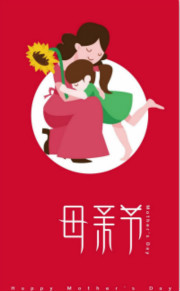

|  | |
母亲节（Mother's Day）
母亲节是一个感谢母亲的节日。这个节日最早出现在古希腊；而现代的母亲节起源于美国，是每年5月的第二个星期日。母亲们在这一天通常会收到礼物，康乃馨被视为献给母亲的花，而中国的母亲花是萱草花，又叫忘忧草。2006年12月，中国民协节徽文化委员会等组织将农历的四月初二，也就是孟母生孟子这一天定为中华母亲节。
节日起源
母亲节的传统起源于古希腊。在一月八日这一天，古希腊人向希腊众神之母瑞亚致敬。到古罗马时，这些活 动的规模就变得更大，庆祝盛况往往持续达三天之久。当然，古时人们对女神的崇拜只不过是一种迷信，它同今天人们对母性的尊敬是大不相同的。 17世纪中叶，母亲节流传到英国，英国人把封斋期的第四个星期天作为母亲节。在这一天里，出门在外的年轻人将回到家中，给他们的母亲带上一些小礼物。
1876年，美国还在悲悼南北战争的死者。安娜·查维斯夫人（Anna Jarvis）在礼拜母亲节由来堂讲授美国国殇纪念日的课程，讲到战役中捐躯的英雄故事后，她进行祈祷时说：“但愿在某处、某时，会有人创立一个母亲节，纪念和赞扬美国与全世界的母亲。”
1913年5月，美利坚合众国众议院一致通过决议，号召总统以及内阁、参众两院和联邦政府的一切官员一律在母亲节佩戴白色石竹花。1914年，美利坚合众国国会正式命名5月的第二个星期日为母亲节，并要求总统发布宣言，号召政府官员在所有的公共建筑物上悬挂国旗。紧接着，威尔逊总统昭告全国公民也在自己的住宅上挂国旗以表达人们对美利坚合众国全体母亲的热爱和尊敬。此后美利坚合众国总统每年都要发表一篇内容相同的宣言。此后，母亲节便在各国开展。
各国习俗
中国：五月的第二个星期日，会用贺卡和康乃馨来表示爱，也有人建议以忘忧草来表达母爱
挪威：母亲节定于二月的第二个星期天。
阿根廷：则在十月的第二个星期天庆祝母亲节。
黎巴嫩：在春天的第一天庆祝母亲节。
南非：母亲节则定于五月的第一个星期天。
南斯拉夫：南斯拉夫的塞尔维亚人称母亲节为Materice，于每年圣诞节的前两个礼拜庆祝。庆祝的习俗是：小孩子们在母亲节的清晨溜进母亲房间，将母亲绑在床上，母亲醒来时发现自己被五花大绑，便哀求孩子们放开她，并以她预先藏在枕头下的小礼物作为交换。
西班牙与葡萄牙的母亲节则与教会有密切的关系。12月8号是纪念圣母玛利亚的日子，同时也是孩子们表达对母亲的爱的节日。
瑞典在五月的最后一个星期日庆祝母亲节。在母亲节前夕，瑞典红十字会会举办塑料制的母亲花的义卖，义卖所得将作为赞助育有许多小孩的母亲的度假经费。
巴拿马：也叫圣灵怀胎的日，大意是为了让巴拿马人重视家庭，敬重母亲，所以在1924年5月11日，巴拿马第一个母亲节，1930年改为12月8日， do a Hercilia de Arosemena第一夫人所签定，但这只是这个网上的消息，不知是否准确，当时很多商号也响应了母亲节给母亲打折，并定为国定假日，非常有意义的节日。
法国：每年五月二十九日是法国的母亲节，节日这天，全球各地的妈妈都怀着喜悦的心情接受孩子们“节日愉快”的美好祝愿。法国首次庆祝母亲节是一九二八年，当时的法国总统为此颁布了一项法令：母亲节是国家的正式节日。法国人的母亲节则更像是一个为全家人举行的生日会。子女会为母亲送上精心挑选的礼物，包括珠宝和富有意义的礼物。法国母亲节定在五月的最后一个星期天，全家人聚在一起享用晚餐，餐毕端出一个为母亲而做的蛋糕。
泰国：每年的八月十二日是泰国的母亲节。节日期间，全国最有意义的活动是“评选优秀母亲”，然后，成千上万的女儿手持洁白的茉莉花作为“母亲之花”敬献给母亲，以表达感激之情。
日本：每年五月的第二个星期日为日本母亲节。在日本，这个节日充满思念的气氛。为表示对母亲的尊敬，一般以赠送康乃馨为主。
加拿大：每年五月的第二个星期日为“母亲节”。在这天，家庭成员除向母亲送礼物外，并要做各种让母亲欢喜事情，以表示敬爱之情。
瑞士：每年的一月一日至四日为“妇女掌权日”。在这四天里，家庭一切大权由妇女掌管，男人甘愿听从摆布，以示对妇女的尊重。
全世界的母亲节：虽然，许多国家是在一年中不同的时节庆祝属于他们的母亲节。然而，世界上的绝大多数国家如中国、丹麦、芬兰、意大利、土耳其、澳洲和比利时，都是在五月的第二个星期日庆祝母亲节的。
节日礼物
康乃馨
1934年5月，美国首次发行母亲节纪念邮票，邮票上一位慈祥的母亲，双手放康乃馨在膝上，欣喜地看着前面的花瓶中一束鲜艳美丽的康乃馨。随着邮票的传播，在许多人的心目中把母亲节与康乃馨联系起来，康乃馨便成了象征母爱之花，受到人们的敬重。国际上献给母亲的花是康乃馨，它在纤细青翠的花茎上，开着鲜艳美丽的花朵，花瓣紧凑而不易凋落，叶片细长而不易卷曲，花朵雍容富丽，姿态高雅别致。红色的康乃馨象征热情，正义，美好和永不放弃，祝愿母亲健康长寿；粉色的康乃馨，祈祝母亲永远年轻美丽；白色的康乃馨，象征儿女对母亲纯洁的爱和真挚的谢意；黄色花朵象征感恩，感谢母亲的辛勤付出。
萱草
萱草，在我国一向有“母亲花”的美称。远在《诗经、卫风、伯兮》里载：“焉得谖草，言树之背？”谖草就是萱草，古人又叫它忘忧草，背，北，指母亲住的北房。这句话的意思就是：我到哪里弄到一支萱草，种在母亲堂前，让母亲乐而忘忧呢？母亲住的屋子又叫萱堂，以萱草代替母爱，如孟郊的游子诗：“萱草生堂阶，游子行天涯；慈母依堂前，不见萱草花。”叶梦得的诗云：“白发萱堂上，孩儿更共怀。”萱草就成了母亲的代称，萱草也就自然成了我国的母亲之花。
萱草花，又叫忘忧草。它是百合科多年生草本植物，根茎肉质，叶狭长，细长的枝顶端开出 桔红或桔黄色的花，十分艳丽，非常适合供人观赏，它的花蕾叫金针，所以也叫金针蕾。在母亲节，子女为母亲送上一株忘忧草，祝福母亲远离烦恼和忧愁，身心愉悦，健康长寿。
为母亲做一顿丰盛大餐
从小到大我们都吃着妈妈做的饭长大，母亲节让我们给母亲也做一桌好菜吧！买个蛋糕，做一次丰盛大餐，家人围在一起开开开心吃个团圆饭，送给给妈妈一个拥抱，说一句‘永远爱你’感谢母亲一直以来的关爱与爱护。其实当父母的并不要求儿女们为自己做什么事，只要当子女的平安幸福快乐健康，就是给父母们的最好礼物了。
亲自为母亲洗一次脚
还记小时候母亲为我们洗脚的情景吗，常年累月，而我们的还调皮捣蛋玩水，没少给他添麻烦，但母亲始终也从未有过任何不高兴，依然乐此不疲。等到我们现在长大了，母亲也老了，老的再也不像小时候那样我们犯错一下子就能追上我们兴师问罪了，母亲常年为我们奔波劳累，现在我们也像母亲当年为我们洗脚那样那样为他洗一回脚吧!这种最贴心化的表达，让母亲感受最无微不至的亲情。
不管是母亲节还是平时，不论在他乡或是身边，也不管你富贵贫贱与否，我们都应该要多多关心我们身边最亲的人母亲，即使一个很细微的想念，她，也能听见。关爱常在，幸福常在。
其实并不只有在母亲节这天才要“特别”去关心母亲， 365天里，每一天都是母亲节，对母亲的关心是不放假的。既然是母亲的专属节日，我们就在这天为她最特别的关爱吧，赶紧行动起来，在感恩的母亲节，去挑选一份送给母亲最好的礼物，无论你送什么，总是那一颗孝子之心才最生动，最感人的。即使最为平常，也因你承载的那份爱一样会在母亲心里弥足珍贵。
让我们大声对母亲说，妈妈，我爱您！